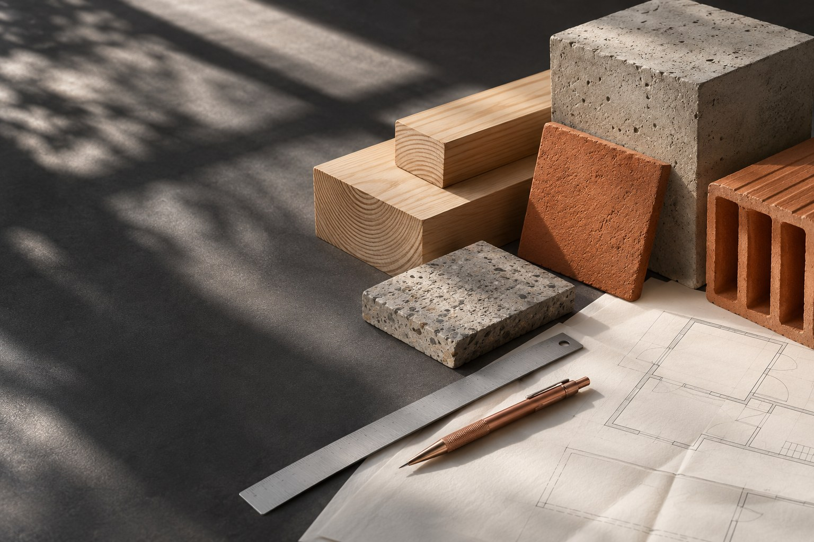

MESA LOCAL DE CARLOS REYNA
Precios unitarios y propuestas.
Organiza los insumos de tus archivos CSV, calcula el costo por unidad y genera una propuesta técnica y económica que puedas revisar antes de entregarla.

EJEMPLO DE ANÁLISIS
Colocación de loseta
- Insumos
- Loseta, adhesivo y mano de obra
- Precio y fuente
- Pendientes de cotización
- Costo directo unitario
- Suma de consumo × precio por insumo
¿Qué necesitas resolver hoy?
Entra al punto de trabajo donde tengas los datos listos.
Cargar mis insumos
Revisa los datos del CSV antes de añadirlos al presupuesto.
Desglosar un APU
Define la unidad de obra y el consumo por cada insumo.
Registrar una cotización
Vincula precio, referencia, fecha y origen del material.
Revisar la propuesta
Detecta faltantes y prepara el documento HTML para revisión.
Tus formatos y tu web
Trazo ya reúne el alcance y el presupuesto. Para que tus datos también lleguen a los reportes y las páginas que usas, estos son los insumos que faltan.
Consultar el alcance de la integración Descargar matriz de campos- Reportes y propuestas originales
- Formato vacío, ejemplo aprobado y campos que deben completarse.
- Página con campos por llenar
- URL, campos obligatorios y reglas de revisión y autorización.
- Búsqueda de materiales
- Especificaciones, región, moneda y fuentes de cotizaciones. Hoy las referencias se añaden manualmente al APU.
- Tu web local
- Carpeta del proyecto e instrucciones para abrirlo y decidir dónde integrar el flujo.